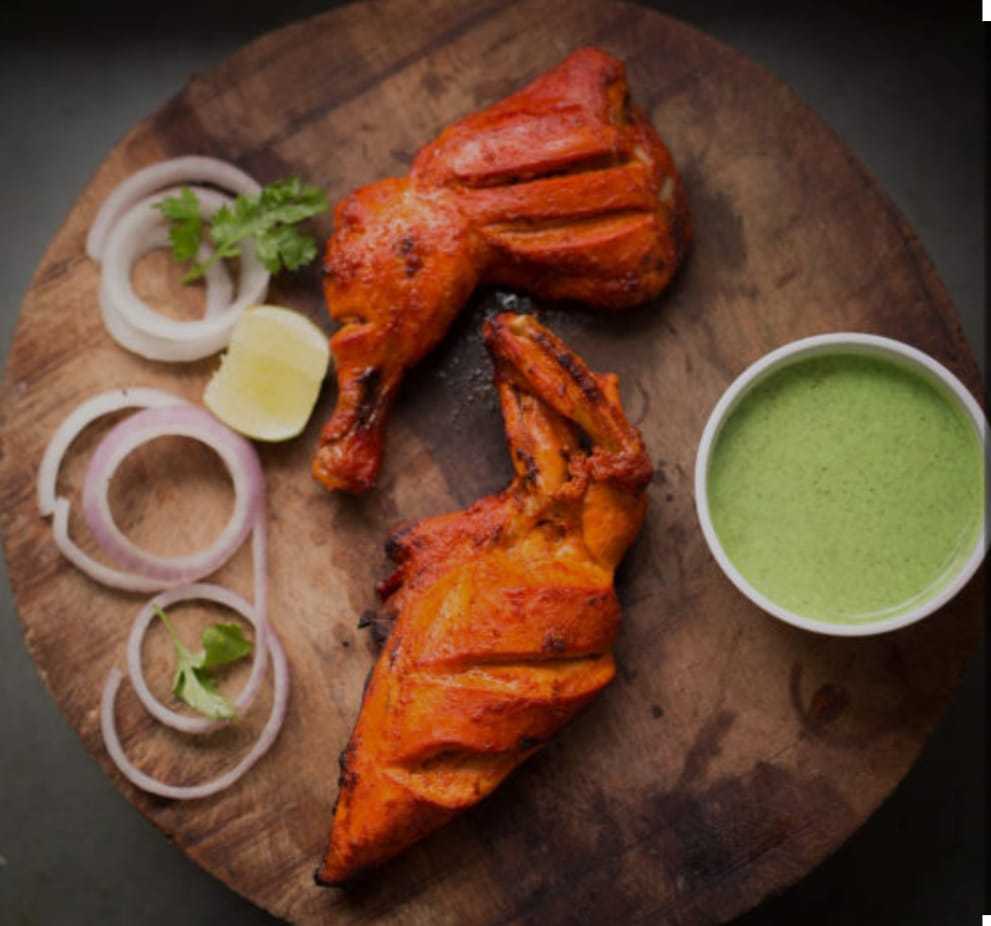

CHICKEN TANDOORI
The ingridents used to make Chicken Tandoori .
The Instructuion To Follow To Make Recipe .
- Make marinade: Mix yogurt, lemon juice, spices, ginger-garlic paste, and salt.
- Prepare chicken: Score the chicken, rub the marinade, and refrigerate for 4+ hours.
- Cook:
- Oven: Preheat to 400°F. Bake for 25-30 mins, turning halfway.
- Grill: Cook for 20-25 mins, turning often.
- Serve: Garnish with lemon and coriander.
If You want to see the video please click the below link. HERE
BACK